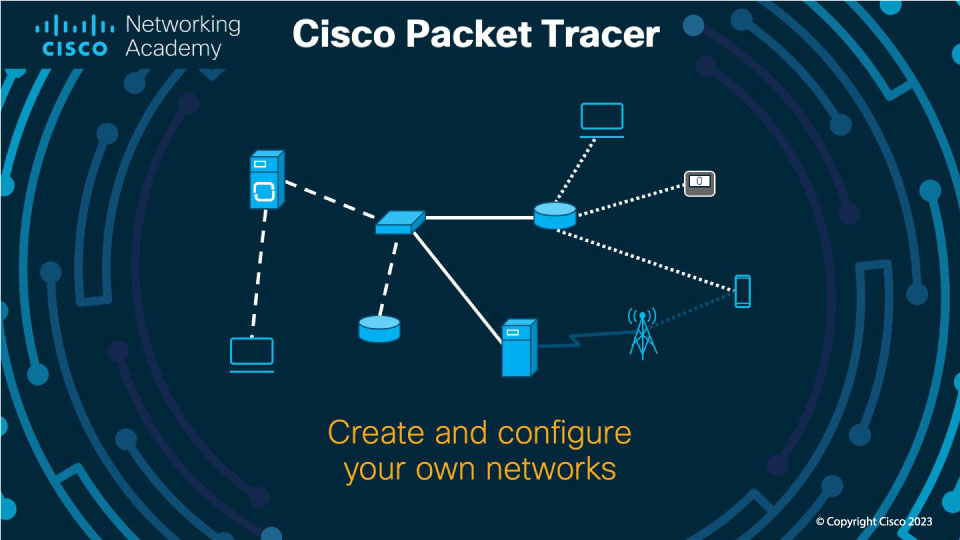

Konseptutvikling
Heim
Om meg
Fag
Teknologiforståelse
Konseptutvikling og programmering
Produksjon og historieforteljing
Me har brukt Cisco packet tracer for å teste netverkssystemer utan fysisk utstyr.

Me har også brukt timen på å lage denne siden